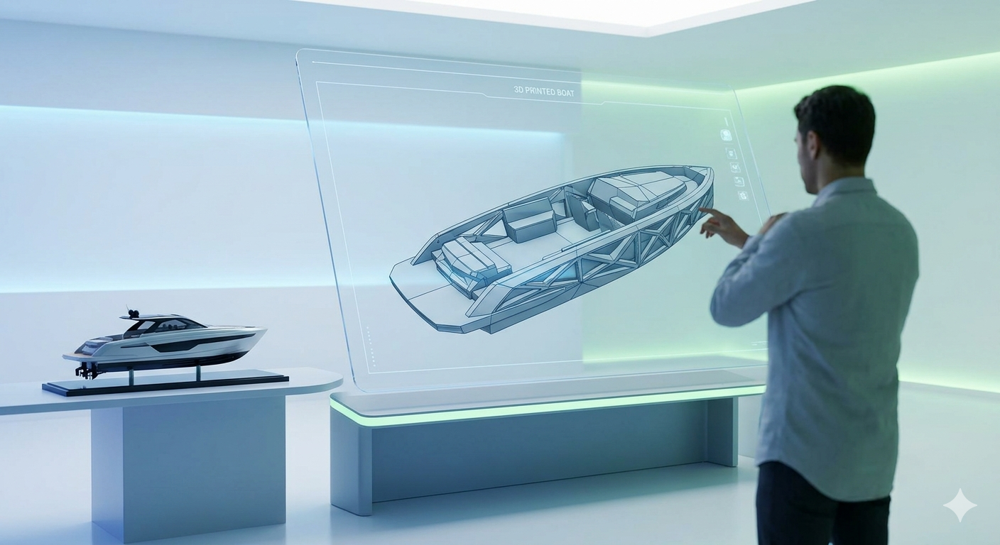
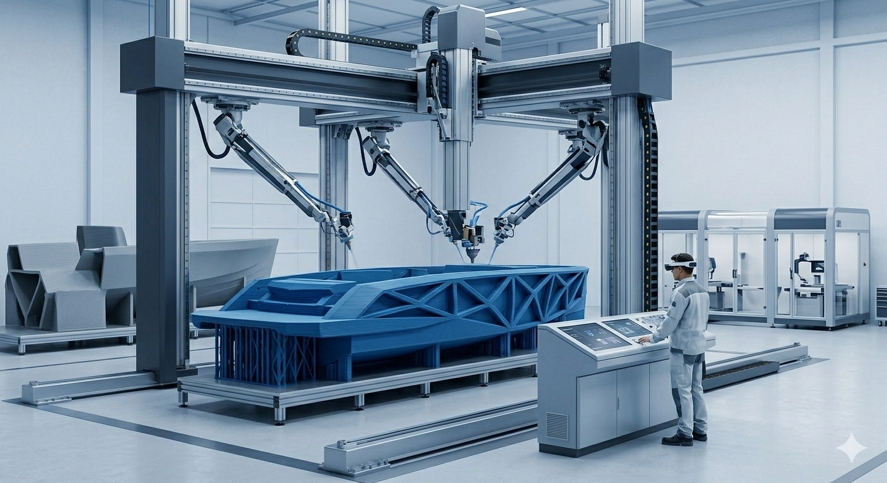
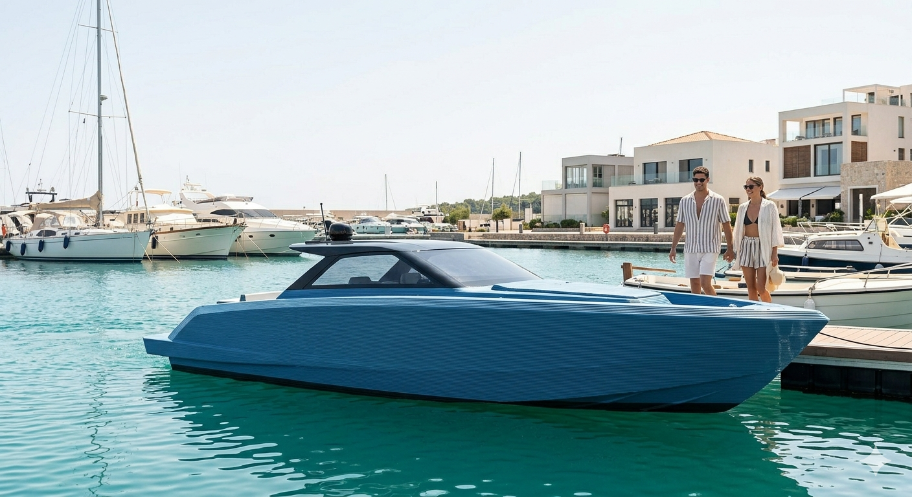
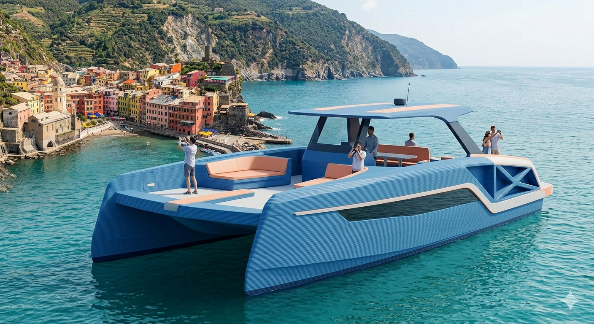
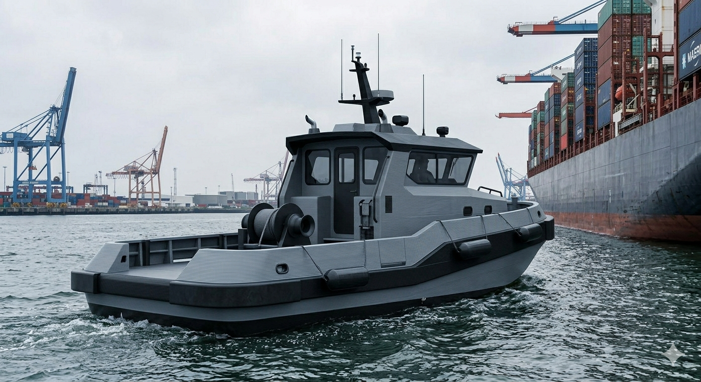
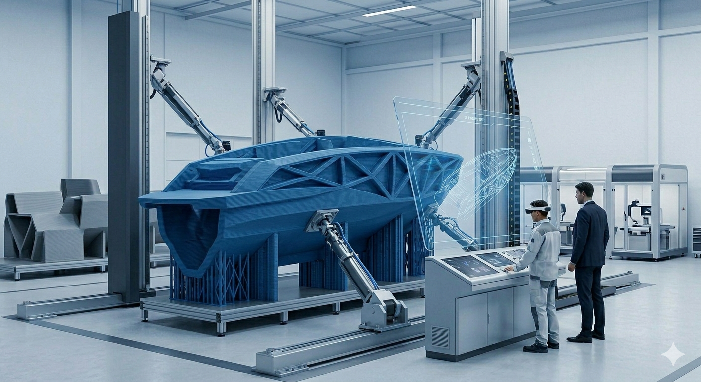
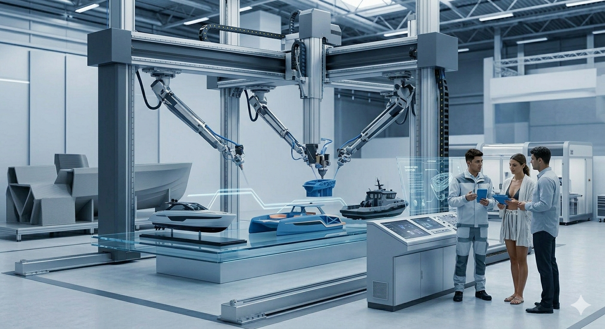
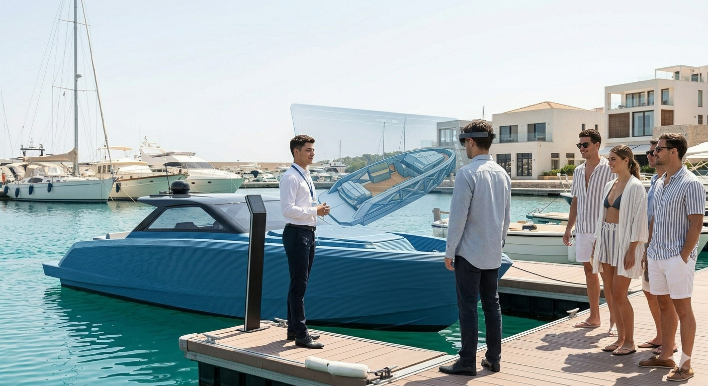

El futur de la nàutica: ràpid, personalitzat i sostenible
Creació d'una empresa pionera en la fabricació de vaixells mitjançant impressores 3D de gran format.
Substituïm els motlles tradicionals per un procés de fabricació additiva que utilitza disseny digital i materials d'alta resistència marítima.


Utilitzem impressores 3D capaces de generar estructures de gran format en una sola peça (monocasc).
Aquest enfocament permet crear geometries hidrodinàmiques complexes que serien impossibles o molt cares de fer amb mètodes clàssics.
Vol seguretat absoluta, però busca destacar amb alguna cosa innovadora i ecològica.
Un mercat naval estancat, on tot sembla igual i la fabricació triga mesos.
Investiga noves tendències, compara materials i valora la tecnologia punta.
Notícies sobre l'evolució de la impressió 3D i recomanacions d'experts en eficiència.

Esbarjo
Turisme
Treball
No venem vaixells, venem **tecnologia segura**. Farem campanyes sobre la resistència dels materials per trencar la barrera de la desconfiança.

Presència en ports esportius, fires nàutiques amb maquetes reals i ús intensiu d'Instagram i LinkedIn per arribar al sector professional.
Viabilitat: Punt d'equilibri previst al 2n any gràcies a l'estalvi en costos de fabricació.

Ús de la Realitat Augmentada per permetre als clients visualitzar el seu vaixell totalment personalitzat abans de començar la impressió.